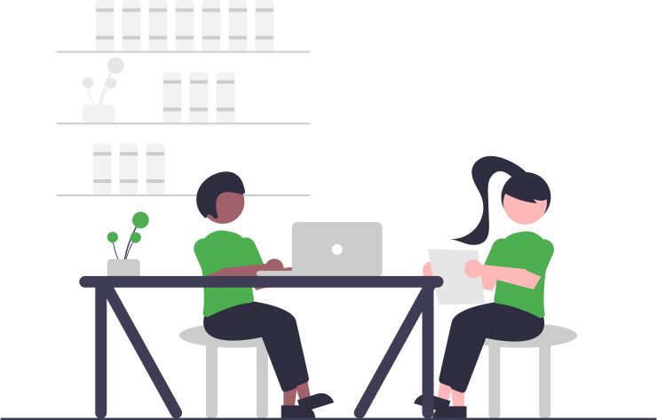
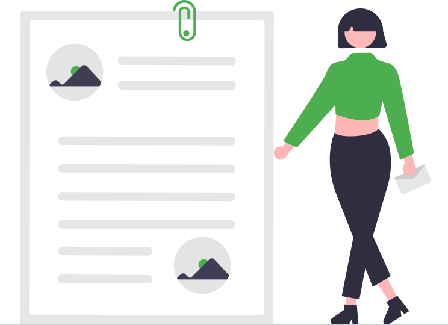

Cahier de texte

Avertissement :#
 Ce site s'adresse aux élèves de seconde du lycée Notre Dame du Mur qui suivent l'enseignement de découverte des Sciences de l'Ingénieur.
Ce site s'adresse aux élèves de seconde du lycée Notre Dame du Mur qui suivent l'enseignement de découverte des Sciences de l'Ingénieur.
Contenu de formation :#
-
Explorer à travers différentes activités courtes le domaine des Sciences de l'Ingénieur :
- simulation et expérimentation de systèmes ;
- programmation de cartes à microcontrôleur ;
- modélisation et impression 3D...

Le 13/01#
-
Synthèse partielle de la programmation des objets connectés sur la plateforme de France-IOI et avec le notebook Quick_Pi-Objets_connectes-Parcours_1.ipynb Capytale n° 6b23-4017450 ;
-
S'initier à la modélisation 3D avec BlocksCAD ;
-
Prendre en main le logiciel OnShape puis modéliser le pion et le support du casse tête puis réaliser un assemblage...
Réalisez tous vos modèles dans un même document OnShape et soumettez progressivement vos productions dans la tache "Prise en main" de la classe 2SI_2025-2026.
-
Poursuivre, avec votre code personnel, la programmation des objets connectés sur la plateforme de France-IOI et Compléter progressivement votre notebook Quick_Pi-Objets_connectes-Parcours_1.ipynb Capytale n° 6b23-4017450 ;
-
Découvrir d'avantage la modélisation 3D avec BlocksCad et Onshape ;
-
Découvrir plus avant les fonctionnalités des notebook jupyter ;
Le 06/01#
Bonne Année
- Synthèse partielle de la programmation des objets connectés sur la plateforme de France-IOI et avec le notebook Quick_Pi-Objets_connectes-Parcours_1.ipynb Capytale n° 6b23-4017450 ;
-
Poursuivre, avec votre code personnel, la programmation des objets connectés sur la plateforme de France-IOI et Compléter progressivement votre notebook Quick_Pi-Objets_connectes-Parcours_1.ipynb Capytale n° 6b23-4017450 ;
-
Découvrir plus avant les fonctionnalités des notebook jupyter ;
Le 16/12#
- Retour sur le T.A.F. ;
- S'initier à la programmation des objets connectés avec la carte QuickPi :
- à partir de la plateforme Castor Informatique France-IOI en utilisant le code
jrkesqn3fourni pour débuter le Parcours_1 ; - notez, et conservez votre code personnel pour retourner dans ce parcours d'une fois sur l'autre ;
- Compléter progressivement le notebook Quick_Pi-Objets_connectes-Parcours_1.ipynb Capytale n° 6b23-4017450 ;
- à partir de la plateforme Castor Informatique France-IOI en utilisant le code
- Poursuivre la programmation de la carte QuickPi avec votre code personnel ;
- Découvrir plus avant les fonctionnalités d'écriture en MarkDown dans les notebook jupyter ;
Le 09/12#
Présentation de l'environnement de travail :#
- Organisation du Labo de SI ;
- Applications iPad utiles : Carnets, ...
Prise en main des notebook jupyter pour communiquer un compte rendu :#

- Compléter dans un navigateur une fiche d'informations à partir de son lien Capytale n°8827-3935418 ou Basthon ;
- Faire
Fichier > Enregistrer sous...pour télécharger sur l'iPad en local un fichier copie de votre notebook complété ; - renommer le au format
Nom_Prenom-fiche.ipynb;

- installer l'application Carnets depuis la bibliothèque d'applications Eleve ;
- déplacer votre fichier
.ipynbdepuis le dossierTéléchargementsvers un nouveau dossier nomméSIdans le dossierCarnets; - ouvrir votre notebook avec
Carnetspour l'augmenter... ; - transmettre votre fichier
.ipynben pièce jointe d'un mail à l'adresse eric.madec@ecmorlaix.fr ;
- Découvrir plus avant les fonctionnalités d'écriture en MarkDown dans les notebook jupyter pour améliorer votre fiche d'informations et la retransmettre par mail ;